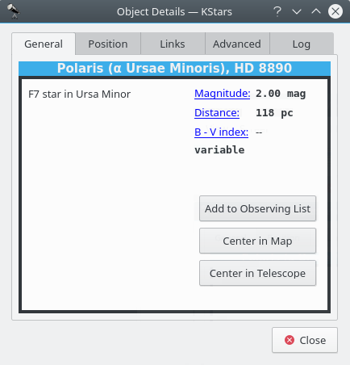

Object Details Window

The Object Details Window presents advanced data available about a specific object in the sky. To access this tool, right-click on any object, and select the Details... item from the popup menu.
The window is divided into a number of Tabs. In the General Tab, we present basic data about the current object. This includes names and catalog designations, object type, and magnitude (brightness). On the Position tab are the object's Equatorial and Horizontal coordinates, as well as its rise, set and transit times.
In the Links tab, you can manage the internet links associated with this object. The Image and Information links associated with the object are listed. These are the links that appear in the popup menu when the object is right-clicked. You can add custom links to the object with the Add Link... button. This will open a window in which you fill in the URL and link text for the new link (you can also test the URL in the web browser from this window). Every time you add a custom URL to a certain object, you are able to choose the resource type using the Resource Type radio button. It has two predefined values: “Image” or “Information”. Keep in mind that the custom link can easily point to a file on your local disk, so you can use this feature to index your personal astronomical images or observing logs.
You can also modify or remove any link using the Edit Link... and Remove Link... buttons.
The Advanced Tab (not available for all objects) allows you to query professional astronomical databases on the internet for information regarding the current object. To use these databases, double click on the desired database in the list to see the results of your query in a web browser window. The query is made using the primary name of the object you clicked on to open the Details Dialog. The following databases are available for querying:
- High Energy Astrophysical Archive (HEASARC). Here you can retrieve data about the current object from a number of “High-energy” observatories, which covers the Ultraviolet, X-ray and Gamma Ray portions of the electromagnetic spectrum.
- Multimission Archive at Space Telescope (MAST). The Space Telescope Science Institute provides access to the entire collection of images and spectra taken with the Hubble Space Telescope, as well as several other space-based observatories.
- NASA Astrophysical Data System (ADS). This incredible bibliographic database encompass the entire body of literature published in international peer-review Journals about astronomy and astrophysics. The database is divided into four general subject areas (Astronomy and Astrophysics, Astrophysics Preprints, Instrumentation, and Physics and Geophysics). Each of these has three sub-nodes that query the database in different ways. “Keyword search” will return articles which listed the object's name as a keyword. “Title word search” will return articles which included the object name in their Title, and the “Title & Keyword search” uses both options together.
- NASA/IPAC Extragalactic Database (NED). NED provides encapsulated data and bibliographic links about extragalactic objects. You should only use NED if your target is extragalactic; i.e. if it is itself a galaxy.
- Set of Identifications, Measurements, and Bibliography for Astronomical Data (SIMBAD). SIMBAD is similar to NED, except it provides data about all kinds of objects, not just galaxies.
- SkyView provides images from All-Sky surveys that have been performed in dozens of different parts of the spectrum, from Gamma Rays to the Radio. The KStars interface will retrieve an image from any of these surveys, centered on the selected object.
Finally, in the Log Tab, you can type in some text that will remain associated with this object's Details window. You could use this to attach personal observing notes, for example. Your notes will be saved, such that you can easily read or use them next time when you will use KStars.